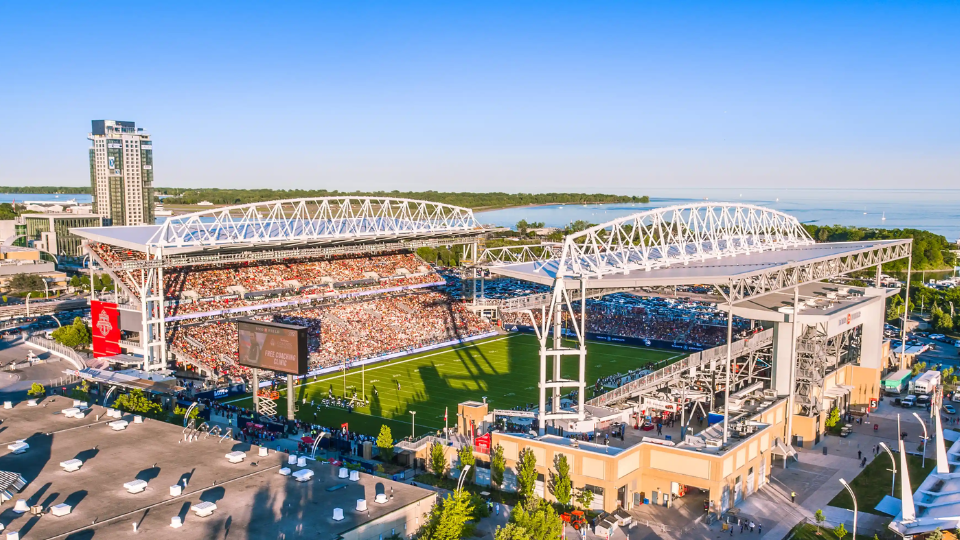
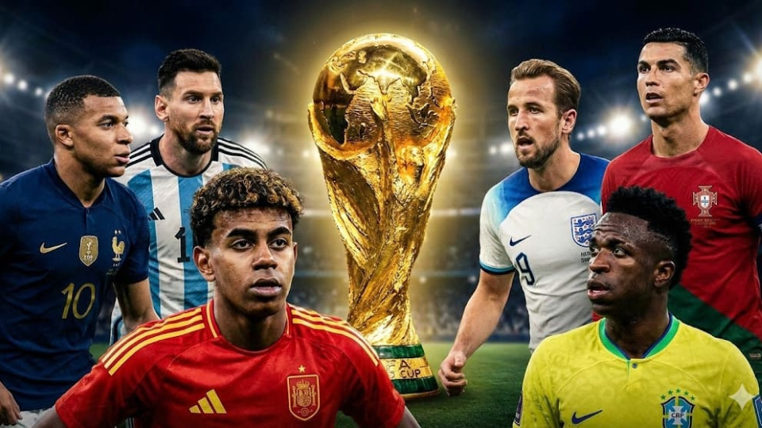

Agora em 2026, mundo por forte transição geopolítica, avanço acelerado da inteligência artificial, disputas tecnológicas entre grandes potências e desafios econômicos ligados à recuperação pós-pandemia e às tensões comerciais globais. A globalização continua presente, mas de forma mais fragmentada, com tendência ao chamado “mundo multipolar”, no qual Estados Unidos, China e blocos regionais disputam maior influência econômica, tecnológica e política.
A edição de 2026 tem como sede conjunta Estados Unidos, Canadá e México, representando a expansão do torneio para a América do Norte e a consolidação de um modelo de organização compartilhada entre países. Essa escolha reflete a forte capacidade econômica e estrutural da região, além de sua relevância no cenário esportivo e comercial global.
Os três países-sede apresentam perfis distintos, mas complementares. Os Estados Unidos são a maior economia do mundo e uma das principais potências tecnológicas e militares. O Canadá se destaca pela estabilidade política, alto padrão de vida e forte integração econômica com os EUA. O México, por sua vez, desempenha papel estratégico como economia emergente e ponte entre a América do Norte e a América Latina.


A realização da Copa envolve investimentos bilionários em modernização de estádios, transporte, segurança e infraestrutura urbana, aproveitando estruturas já existentes em grandes centros urbanos, especialmente nos Estados Unidos. O torneio também impulsiona setores como turismo, tecnologia, mídia digital e entretenimento global.
O legado da Copa de 2026 tende a estar fortemente ligado à inovação tecnológica e à integração continental. Espera-se o uso ampliado de inteligência artificial na análise de jogos, maior digitalização da experiência do torcedor, transmissões imersivas e novos modelos de consumo esportivo. Além disso, o evento reforça a tendência de organização compartilhada de megaeventos, reduzindo custos individuais e ampliando o alcance global.
A final será disputada nos Estados Unidos, em um dos grandes estádios do país, com expectativa de público superior a 70 mil espectadores. O torneio marcará também a primeira Copa do Mundo com 48 seleções participantes, ampliando significativamente a representatividade global do futebol.
Entre os favoritos desta edição estão a Argentina (atual campeã mundial), a Espanha (em fase de renovação técnica), a Alemanha (que busca recuperar sua hegemonia após campanhas recentes de menor impacto) e França.